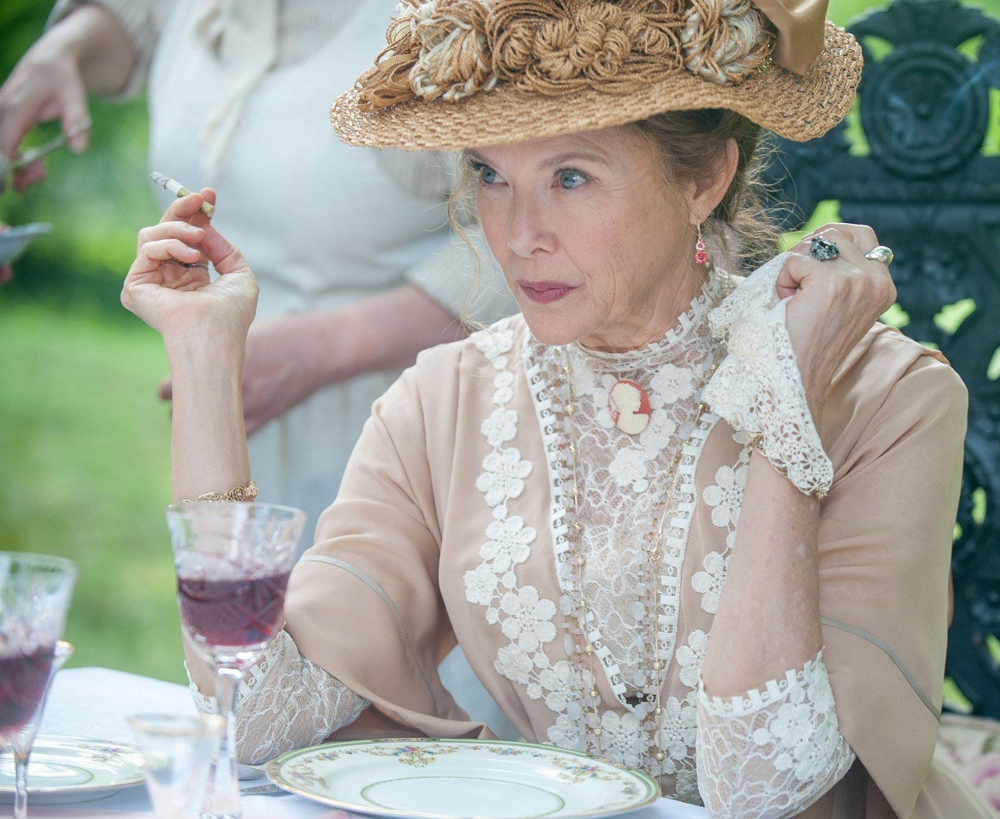
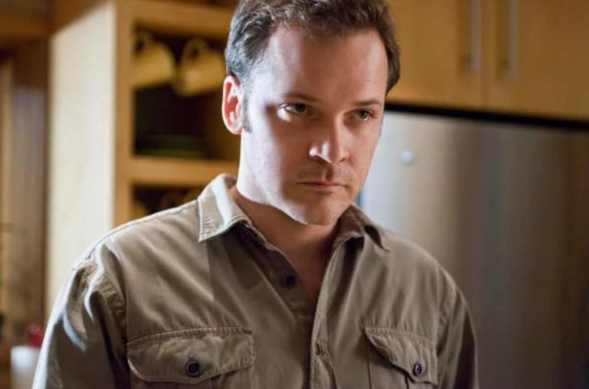
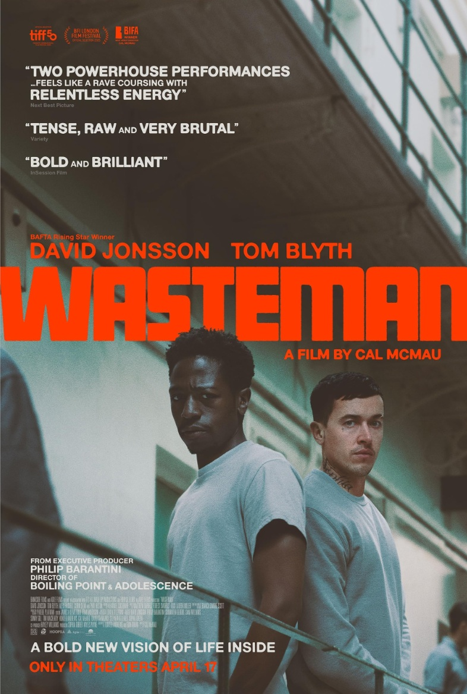
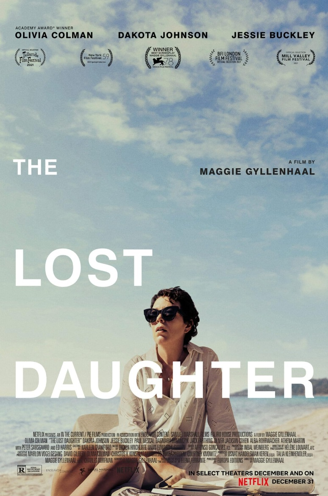
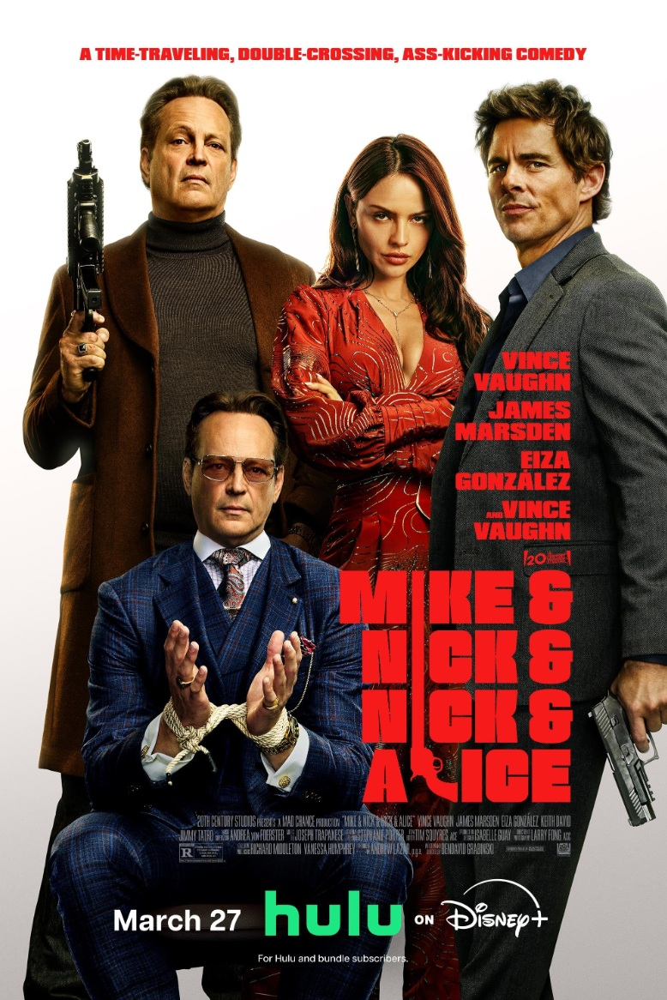
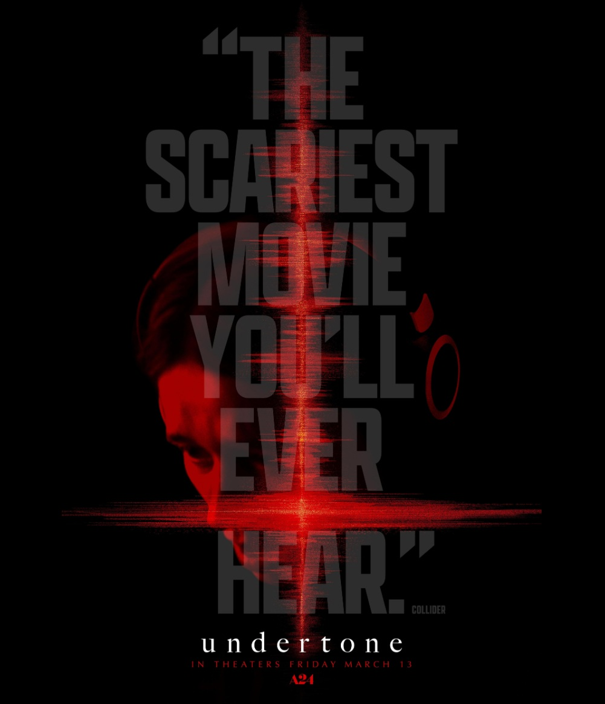

LA NOVIA
En el Chicago de los años 30, Frankenstein pide ayuda al Dr. Euphronius para crear una
compañera. Dan vida a una mujer asesinada como la Novia, lo que desencadena un
romance, el interés de la policía y un cambio social radical.
- Género: Ciencia Ficción
- Año: 2026
- Duración: 1h 38min
- Director: Maggie Gyllenhaal
- Productores/as: Pete Chiappetta, Maggie Gyllenhaal, Osnat Handelsman-Keren
- Calificación general: 6.8/10
- Clasificación por edad: +16
- Plataformas: Prime Video
Tráiler
REPARTO
JESSIE BUCKLEY
CHRISTIAN BALE

ANNETTE BENING
PENÉLOPE CRUZ

PETER SARSGAARD
RESEÑAS DESTACADAS
Calificación: 1.0 / 10
belikewaterix-00738 dice:
Nada especial
"Por mucho que Joker y Harley Quinn sintieran con un ambiente de Bonnie y
Claude, no vi nada especial en ello. Quería un monstruo paranormal más intenso
y lo que obtuvimos fue un villano tipo Batman psicópata. Horrible. Hay algunos
momentos visuales encantadores, pero en general no sentí la química ni la trama
de la historia, si es que se le puede llamar así. La historia simplemente no
encajaba ni expresaba un punto sobre cuál era el verdadero propósito."
Calificación: 7.0 / 10
Blooberry777 dice:
¡De hecho, me ha gustado!
"Llegué con expectativas muy bajas para esta película dadas sus valoraciones y
críticas. A pesar de esto, ¡salí con ganas de volver a verla! Desde sus temas de
feminismo hasta romance y el anhelo de compañía, valió mucho la pena si te
gusta el terror gótico, no te importa un poco de sangre y ya disfrutas de la
original La novia de Frankenstein."
Calificación: 1.0 / 10
Srsanford dice:
Pérdida de mi vida
"Mary Shelley hablando al público en la primera escena. Debería haberme ido
entonces. Esta película me hizo gemir. Un truco. Engreído. ¿Cómo se financia
tonterías como esta? Un insulto total para el público. Sin trama, personajes sin
desarrollar, escenas gore gráficas y baratas, parecía que los diálogos los
escribió IA. Simplemente horrible. Una pérdida de tiempo y dinero."
Calificación: 7.0 / 10
Katiegoldberg dice:
Historia de amor del siglo
"Empecé a La novia esperando algo oscuro y sombrío, pero lo que recibí fue una
historia de amor estilizada que me atrapó por completo. Es gótica, tierna, un
poco caótica en algunos momentos, pero la emoción está tan en primer plano
que ni siquiera me importó cuando las cosas se complicaron. Todo se siente
empapado en anhelo y obsesión, en el mejor sentido.
La interpretación es fantástica. Puedes sentir cada mirada, cada vacilación, cada
intento desesperado de conectar. Me recordó a lo que 'Joker Folie à Deux'
intentaba transmitir emocionalmente: esa devoción romántica y un poco
desquiciada, pero esto realmente me hizo creerlo. No todo encaja
perfectamente, pero no creo que ese sea el punto. No se trata de contar
historias ordenadas. Se trata de la sensación.
Y la verdad es que esta historia de amor me pareció muy creíble. ¿Retorcido? Sí.
¿Intenso? Por supuesto. Pero real en su vulnerabilidad. Es una de esas películas
que perdura porque se atreve a sentarse en la incomodidad del amor y la
identidad. Si te gusta el romance melancólico con sustancia y estilo, este va a
impactar."
Calificación: 2.0 / 10
mattholst-78266 dice:
Una cosa buena de esto...
"Me sacó de casa en un día cálido y soleado. Como solo conseguí aguantar 48
minutos antes de salir por fin, pude disfrutar aún más del precioso día. ¡Y el aire
fresco era bienvenido después de ese desastre! Me asombra cómo Hollywood
parece tener un pozo inagotable de dinero para seguir produciendo películas
horriblemente escritas y sin trama una y otra vez, y otra y otra vez..."
RELACIONADOS

WASTE MAN
Calificación: 7.3/10
DURACION: 1h 30min

LA HIJA OSCURA
Calificación: 6.7/10
DURACION: 2h 1min

MIKE & NICK & NICK & ALICE
Calificación: 6.2/10
DURACION: 1h 47min

UNDERTONE FRECUENCIA MALDITA
Calificación: 6.0/10
DURACION: 1h 34min